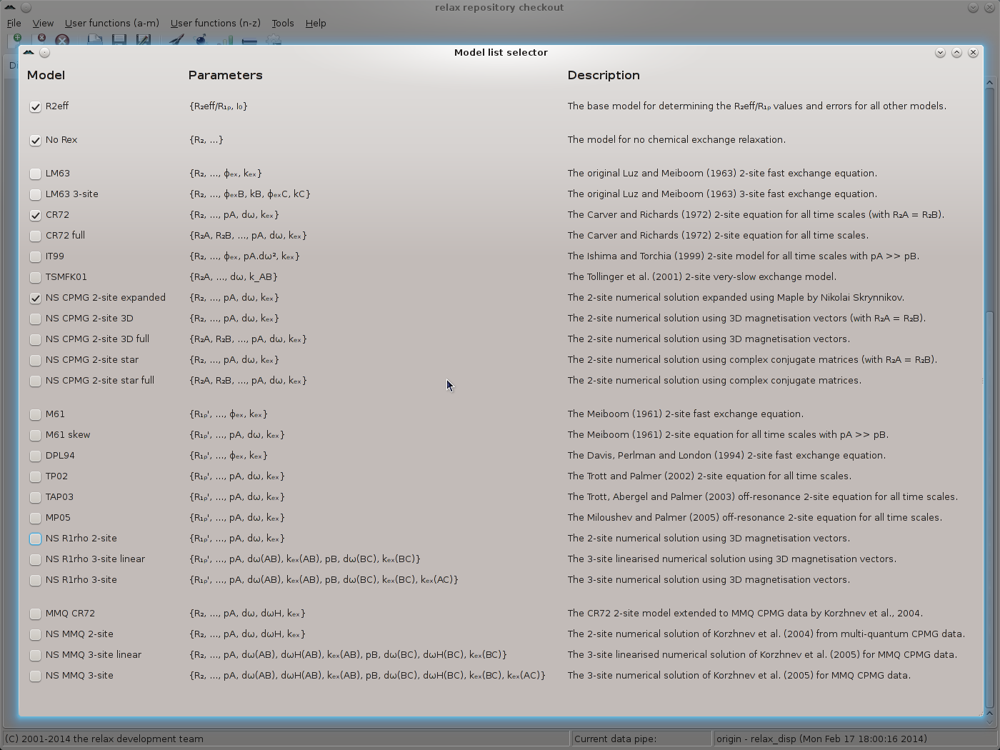

Next: Dispersion GUI mode - Up: The relaxation dispersion auto-analysis Previous: Dispersion GUI mode - Contents Index
The next step is to specify which relaxation dispersion models will be used in the analysis. The number of models used should be limited based on your knowledge of the problem. Depending on experimental information, a number of models can be ruled out. For example for the data used in this tutorial, the exchange is known to be slow. Hence all of the fast exchange models can be excluded. For the conditions under which the various dispersion models can be used, please refer to the original references. In relax many dispersion models are provided, however you should never use them all.
For this tutorial, we will only use the following dispersion models:
![[*]](crossref.png) ).
).
).
This is the standard model for slow timescale CPMG-type data (for fast timescales use the `LM63' model instead and for very slow exchange the `TSMFK01' model).
).
).
).
).
This is the standard model for slow timescale CPMG-type data (for fast timescales use the `LM63' model instead and for very slow exchange the `TSMFK01' model).
).
To chose which models will be used in the analysis, click on the ``Modify'' button of the ``Relaxation dispersion models'' GUI element in the main relax window and change the model list to:
|

|
The ``Pure numerical solution'' flag will be left on ``False''.
But if you prefer to only have results from the numerical models, this can be changed to ``True'' by clicking on the ``Toggle'' button (note that the `CR72' model should nevertheless be used to speed up optimisation - see section 11.9.5 on page for details).